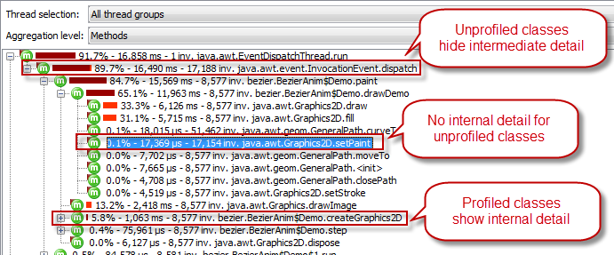
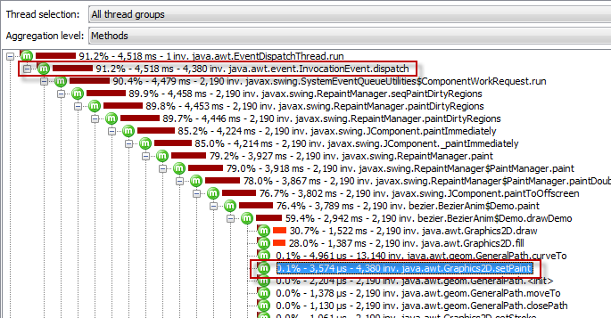
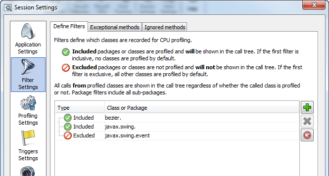
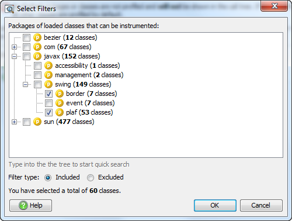

Filters for Method Call Recording - How They Work and How They Are Configured |
Since the internal data storage of CPU data in JProfiler is similar to the invocation
tree, method call recording filters are most easily explained while looking at the
call tree view. As an example,
we profile the "Animated Bezier Curve" demo session that comes with JProfiler.
When talking about filters, it is important to define the distinction between your code
and framework or library code. Your classes should be profiled, framework or library code
should not be profiled. In our example, the BezierAnim class is code written by you
and the JRE is library code.
The call tree shows call sequences. Each node and each leaf of the call tree corresponds to a certain call stack that has existed one or multiple times while CPU recording was switched on. You will notice that there are different icons for nodes in the tree. Among other things, these icons serve to highlight if classes are filtered or not.
The methods of an unprofiled class (alternatively the class or containing package itself, depending on the aggregation level) are endpoints in the call tree, i.e. their internal call structure will not be displayed. Also, any methods in other unprofiled classes that are called subsequently, are not resolved. If, at any later point in the call sequence, the method of a profiled class is called, it will be displayed normally. In that case, the call tree shows the icon of the unprofiled parent method with a red top-left corner that indicates that it is from an unprofiled class and that there may be other intermediate method calls in between. The inherent time of those missing method is added to the time of the unprofiled parent method.
The image below illustrates the different node types for a profiling run of the BezierAnim class:

In the above call tree, the java.* and javax.* packages are filtered, so only the first
method in the the AWT event dispatch thread is shown. In addition, the InvocationEvent#dispatch() method
is shown because it is a special method that is used for analyzing long-running AWT events. However, the AWT
is a complex system and the InvocationEvent#dispatch() method does not call BezierAnim$Demo#paint()
directly. If we add javax.swing in the filter settings, the call tree
looks like this:

Now, the entry method into your code - BezierAnim$Demo#paint() - is
substantially more difficult to find. In cases where events are propagated through
a complex container hierarchy, the call tree can become many hundreds of levels deep and
it becomes next to impossible to interpret the data. In addition, calls like
java.awt.Graphics2D#setPaint() show their internal structure
and implementation classes. As a Java programmer who is not working on the JRE itself,
you probably do not know or care that the implementation class is actually
sun.java2d.SunGraphics2D. Also, the internal call structure is
most likely not relevant for you, since you have no control over the implementation.
It just distracts from the main goal: how to improve the performance of your code.
Not only is it easier to interpret a call tree that has been recorded with proper filter settings, but also the profiling overhead of the profiled application is much lower. Recording the entire call tree without filters uses a lot of memory and measuring each call takes a lot of time. Both these considerations especially apply to application servers, where the surrounding framework is often extremely complex and the proportion of executed framework code to your own code might be very big.
Filter settings are part of the session settings. Please see the article on session settings for more information. The help on sessions explains under what circumstances changes in the profiling settings can be applied to an active session.

There are two ways in JProfiler to specify the profiled classes:
An "exclusive filters" means that you specify a package or class that should not be profiled. New sessions have a default list of exclusive filters that work for many applications.
If the first filter is an exclusive filter, all classes except for the following excluded packages will be profiled. Further inclusive filters can be used to add back some sub-packages.
An "inclusive filters" means that you specify a package or class that should be profiled.
If the first filter is an inclusive filter, only the the following included packages will be profiled. Further exclusive filters can be used to remove some sub-packages.
For sessions where JProfiler attaches to a running, JVM, you can select filters from a package browser that tells you how many classes will be profiled based on your selection.

In addition to the method call recording filters, there is a view filters control at the bottom of all views that display call trees. View filters are similar to inclusive filters and can be changed during a session. However, they can only reduce the recorded information by taking out classes that do not correspond to the selected view filter.
In the call tree, they have a similar behavior like the call tree collection filters. In the hot spot views, they simply hide all classes that do not correspond to the filter selection. This is very different from method call recording filters, where the hot spots themselves change with different filter settings.